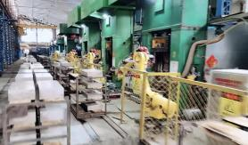
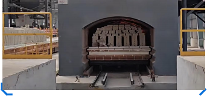

| 项目 | 状态 | 运行时长 | 检出率 | OEE | 本月产量 |
|---|---|---|---|---|---|
| 新沂·锡沂研究院 | 在线 | 2,847h | 98.6% | 88.5% | 38.2万块 |
| 山西·鑫城科技 | 在线 | 1,532h | 98.3% | 85.9% | 24.1万块 |
| 湾区交付中心 | 筹备 | — | — | — | — |
| 澳门体验中心 | 规划 | — | — | — | — |


两个标杆项目覆盖铝硅系（新沂）与镁碳系（山西）两大类耐材，验证了视声融合检测与知识图谱在不同配方、不同窑型下的跨场景泛化能力。
在线产线持续回传复检数据，驱动知识图谱与温控模型自更新——这正是我们相对纯硬件检测厂商的数据壁垒，也是中葡出海的可复制底座。